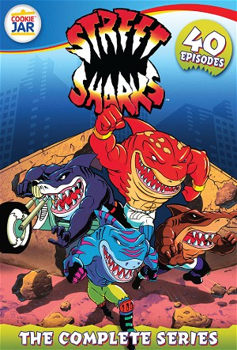

Street Sharks (1994)
ActionAdventureAnimationCrimeFamilyScience Fiction
| Year | 1994 |
|---|---|
| Rating | TV-Y |
| Status | Completed |
| Seasons | 4 |
| Episodes | 61 |
| Genre | Action, Adventure, Animation, Crime, Family, Science Fiction |
When an evil genetic-engineer, Dr. Paradigm, illegally experiments with an untested DNA genetic formula, four brothers are accidentally transformed into monstrous half shark - half humans! Delighted with his success, the diabolical madman seeks to alter nature and tailor all humanity into sea creatures of his own design and control! The Bolton brothers - John, Bobby, Coop and Clint - team up to stop Dr. Paradigm and his deadly Seaviates from transforming the citizens of Fission City into mutants with no free will.
Episodes
Specials
| # | Title | Air Date | Synopsis |
|---|---|---|---|
| 1 | C.O.P.S.: The Case of the Boy Who Cried Sea Monster | — | |
| 99 | The Gene Slamming Begins | — | The first 3 episodes: Sharkbait, Sharkbite, and Sharkstorm were combined for a direct-to-video movie titled The Gene Slamming Begins. Only released on VHS! |
Season 1
| # | Title | Air Date | Synopsis |
|---|---|---|---|
| 1 | Sharkbait | 1994-09-07 | Dr. Robert Bolton had invented a gene-slamming device for peaceful uses until his colleague Dr. Luther Paradigm uses it for his evil purposes. When Dr. Bolton tries to intervene, he ends up gene-slammed into an unseen in |
| 2 | Sharkbite | 1994-09-14 | Part 2 of the pilot, where the Street Sharks are on a runaway from the police along with their friends Bends and Dr. Lena. The Sharks must find a new place to live in and be safe from society. |
| 3 | Sharkstorm | 1994-09-21 | Ripster, Jab, Streex, and Slammu must protect their reputations and change the way they are being viewed in Fission City. They must fight Dr. Piranoid as well as finding their father once and for all. |
| 4 | Shark Quest | 1994-09-28 | Dr. Paradigm captures Big Slammu to control his mind and the Street Sharks must break into Dr. Paradigm's hideout to save their brother. |
| 5 | Lone Shark | 1994-10-07 | While the Street Sharks are going out for burgers, Dr. Paradigm transforms a squid he has acquired into Killamari who becomes the latest member of the Seaviates. The Sharks have to stop them from breaking into the Bolton |
| 6 | Shark n' Roll | 1994-10-14 | When a musician called Melvin Kresnik accidentally digests contaminated popcorn and water that was tainted with a gene-slamming chemical, he becomes a mako shark later known as Rox and befriends the Street Sharks. Togeth |
| 7 | Fresh Water Sharks | 1994-10-21 | The citizens of Fission City hear an announcement from Dr. Paradigm that he has invented a vaccine against the gene-slamming formula. |
| 8 | Shark Treatment | 1994-10-28 | With the help of a mind-control serum, Dr. Paradigm turns Jets Taylor into a killer whale mutant named Moby Lick to be his latest Seaviate. |
| 9 | Road Sharks | 1994-11-07 | When Streex has been captured by Dr. Paradigm, the rest of the Street Sharks alongside Moby Lick take to the roads to rescue him. |
| 10 | Shark Fight | 1994-11-14 | Rox is back in town for the Fission City Music Awards and plans to play the evidence that would expose Dr. Paradigm's gene-slamming activities. |
| 11 | Sky Sharks | 1994-11-21 | When his hotel had been previously destroyed by the Street Sharks and no family members to live with, Mr. Cunneyworth allows Dr. Paradigm to gene-slam him with the DNA of an electric eel and a moray eel which transforms |
| 12 | Shark of Steel | 1994-11-28 | The Street Sharks are framed and brought out of hiding by Sharkbot, the robotic machine built by Dr. Paradigm. The Street Sharks must once again defend their reputations and take on Sharkbot. |
| 13 | Shark Source | 1994-11-28 | The Street Sharks discover an underground civilization of mutant crocodiles that happen to know Dr. Bolton after he cured them of their damaged genes. Meanwhile, Dr. Paradigm rebuilds Sharkbot and captures one of the mut |
Season 2
| # | Title | Air Date | Synopsis |
|---|---|---|---|
| 1 | Jurassic Shark | 1995-01-05 | Jab and Streex are sent back in time in two different eras by Dr. Paradigm's time machine called the Time Slammer. Back in the present, Slammu, Ripster, and Bends have to deal with Dr. Piranoid's Seaviates who are now jo |
| 2 | Sir Shark-a-Lot | 1995-01-12 | Dr. Paradigm creates Tentakill as part of his time-traveling plot to have Killamari go back to the medieval times and kill the Street Shark's ancestor Sir Thomas Bolton. Ripster and Big Slammu hijack Dr. Paradigm's Time |
| 3 | Shark to the Future | 1995-01-19 | The Street Sharks are sent to a future where Dr. Piranoid controls everything. They meet up with Bends' great-great-grandson General Bendsini and join the rebel forces. |
| 4 | First Shark | 1995-01-26 | The Street Sharks go to Washington D.C. to save President David Horne from being "gene washed" by Dr. Piranoid as part of his plot to control President Horne after he had successfully gene-washed Vice President Russell. |
| 5 | Rebel Sharks | 1995-02-05 | The Street Sharks and Bends travel to the country of Chernosium to help a child named Ilya (who had sent them a fan letter), rescue his father President Andre Knezevic, and overthrow a dictator named Ekerson Nozum. |
| 6 | Space Sharks | 1995-02-12 | After extracting alien DNA from a sample found on an asteroid, Dr. Piranoid tries to gene-slam the entire planet with this alien DNA mixed with manta ray DNA. The Street Sharks are sent up to space, per the president's r |
| 7 | A Shark Among Us | 1995-02-19 | Lena's brother Malik is among those who have been taking strength-enhancing pills. Ripster goes undercover to trace the source of the pills and discovers that a drug dealer named Jackal has been distributing the pills in |
| 8 | To Shark or Not to Shark | 1995-02-26 | The Street Sharks have suddenly become human again due to a formula made by Dr. Piranoid as part of a plan to keep the Street Sharks human permanently. |
| 9 | Eco Sharks | 1995-03-05 | While investigating the killer whale attacks, the Street Sharks and Moby Lick trace the attacks to Malcolm Medusa III's marine animal sanctuary called Medusa Cove which is being covered up by holograms to hide the pollut |
| 10 | Close Encounters of the Shark Kind | 1994-11-28 | Mantaman returns to Earth to help the Street Sharks fight the energy-draining alien before it starts draining Earth's electricity. |
| 11 | Satellite Sharks | 1995-03-19 | The Stromboli Circus is in town where El Swordo and his swordfish Spike are the main attraction. Spike is soon targeted by Dr. Piranoid so that he can mutate and control it with the Chromifier Ray so that he can gain con |
| 12 | Cave Sharks | 1995-04-08 | Fission City has suffered a blackout as Dr. Paradigm unveils the Wolverinepedes (a wolverine/centipede hybrid) which will be a solution to Fission City's toxic waste problems. The Street Sharks are contacted by Paxel of |
| 13 | Shark Wars | 1995-04-15 | Dr. Paradigm is visited by his future counterpart in his Time-Slammer where they work on a plan to develop a mechanism to alter the world's genetic code by New Year's Eve. The Street Sharks are tipped off about the distu |
| 14 | The Sharkfather | 1995-04-22 | An aged crime boss named Maximilian Greco discovers Ripster and Streex fighting Killamari and Repteel at a nearby zoo as part of Dr. Paradigm's plot to obtain animal specimens for his Genetic Engineering Chamber. Upon tr |
| 15 | Shark Hunt | 1995-05-01 | Malcolm Medusa III and Clammando are back and have been hunting Florida Panthers in the Everglades as part of a plot to develop a Chemical Waste Incinerator there. After Moby Lick has been caught by Malcolm when trying t |
| 16 | Card Sharks | 1995-05-08 | Maximilian Greco is back and has established a casino called the Golden Greco while making its surrounding areas as part of Fission City's casino district. Dr. Paradigm sends Repteel and Shrimp Louie to raid the Golden G |
| 17 | Shark Jacked | 1996-05-13 | Dr. Piranoid has Killamari and Tentakill capture Mantaman's younger brother Ryan so that he can get Mantaman to hijack two jets with one of them carrying the Latonian President and the other one carrying the Coachnian Pr |
| 18 | Turbo Sharks | 1996-05-20 | At the time when Jab is going to compete in the Cross-Country Grand Prix, Dr. Paradigm creates the Gene-Slam Bomb and places it in the Turbo Jab vehicle so that it would detonate at the Cross-Country Grand Prix if Jab do |
| 19 | 20,000 Sharks Under the Sea | 1996-05-29 | At the time when El Swordo is entertaining the USS Liberty, a four-headed sea monster (where some navy officers have compared it to Scylla) has been attacking ships and submarines at sea. To prevent an international inci |
Season 3
| # | Title | Air Date | Synopsis |
|---|---|---|---|
| 1 | Ancient Sharkonauts | 1996-10-03 | A space capsule that landed on Earth 65,000,000 years ago has been unearthed by archaeologists. While Dr. Paradigm has taken interest in the space capsule, an incident involving the capsule's prisoner Bad Rap causes Mant |
| 2 | Sharkotic Reaction | 1996-10-10 | President Horne contacts the Street Sharks informing them that a UFO has been sighted in the Solar System. Upon investigating, the Street Sharks meet the Dino Vengers T-Bone, Stegz, Bullzeye, and Spike. The Street Sharks |
| 3 | Sand Sharks | 1996-10-17 | While fighting the Raptors, the Street Sharks and the Dino Vengers hear from President Horne that the military is testing their stealth Super Shadow chopper. As the Street Sharks and the Dino Vengers work to protect the |
| 4 | Shark Quake | 1996-10-24 | During winter, the Raptors make plans to warm up Earth in order to make it more hospitable for the Raptors. They do this by making Mt. Cauldron (a dormant volcano near Fission City) erupt by firing a missile into it so t |
| 5 | Super Shark | 1996-10-31 | At the time when Big Slammu prepares for Fission City's comic book convention at a local convention center to meet his favorite comic book writer Jake Langstrom, Bullzeye learns about comic books and follows Big Slammu t |
| 6 | Jungle Sharks | 1996-11-07 | When the Street Sharks and the Dino Vengers stop the Raptors from stealing a submarine, Stegz, Spike, and Bullzeye come down with a virus with the same symptoms as the virus the Dino Vengers once contracted on the planet |
| 7 | Trojan Sharks | 1996-11-28 | In order to track the Dino Vengers to their lair, the Raptors cause havoc at an amusement park and ambush the Dino Vengers where they managed to secretly place a tracking device on Stegz so that they can find the Dino La |
| 8 | Shark-apolypse Now | 1997-05-18 | At the time when the World Leaders have come to an agreement not to use biological weapons, the Street Sharks and the Dino Vengers are enlisted to guard a top secret facility that the biological weapons are going to be s |
| 9 | Street Sharks S03E09 | 2016-01-01 | |
| 10 | Street Sharks S03E10 | 2014-03-31 | |
| 11 | Street Sharks S03E11 | 2015-06-10 | |
| 12 | Street Sharks S03E12 | 2014-03-31 | |
| 13 | Street Sharks S03E13 | 2015-07-03 | |
| 14 | Street Sharks S03E14 | 2015-07-03 | |
| 15 | Street Sharks S03E15 | 2015-07-05 | |
| 16 | Street Sharks S03E16 | 2014-09-03 | |
| 17 | Street Sharks S03E17 | 2014-12-22 | |
| 18 | Street Sharks S03E18 | 2014-03-31 | |
| 19 | Street Sharks S03E19 | 2014-03-31 | |
| 20 | Street Sharks S03E20 | 2015-03-06 | |
| 21 | Street Sharks S03E21 | 2015-06-11 | |
| 22 | Street Sharks S03E22 | 2014-05-28 | |
| 23 | Street Sharks S03E23 | 2014-08-24 | |
| 24 | Street Sharks S03E24 | 2014-06-20 | |
| 25 | Street Sharks S03E25 | 2016-03-16 | |
| 26 | Street Sharks S03E26 | 2014-07-06 | |
| 27 | Street Sharks S03E27 | 2015-11-03 |